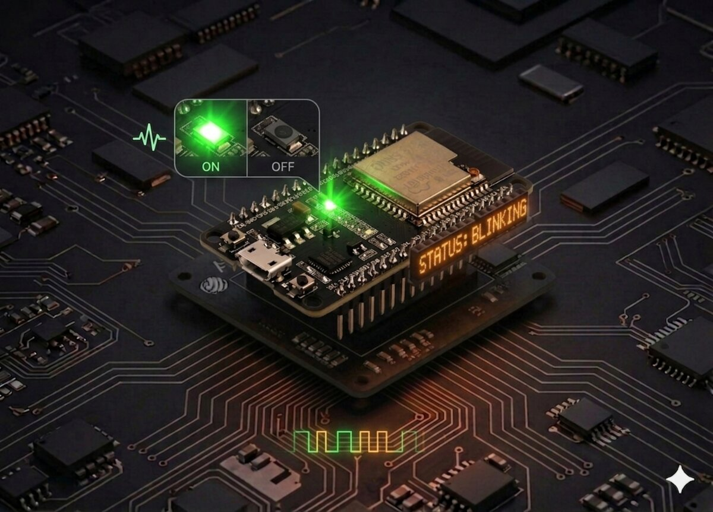
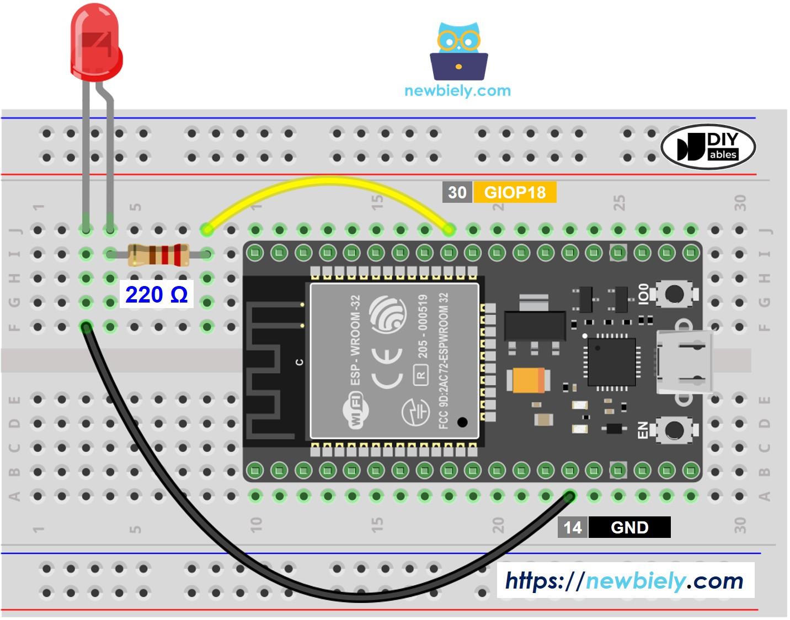
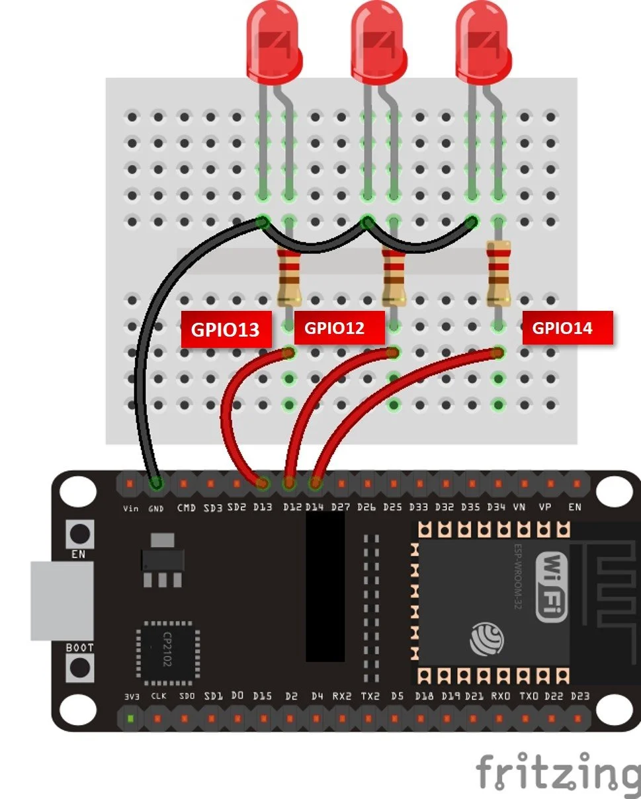

LED Blink
Hello World for ESP32: toggle the onboard LED with MicroPython.
LED Blink¶
Blinks the ESP32's built-in LED (GPIO 2) on and off every second using MicroPython.

Description¶
This is a minimal MicroPython script that toggles the onboard LED of an ESP32 board in an infinite loop with a 1-second interval. It serves as the "Hello, World!" of embedded systems.
Code¶
import machine
import time
# Pin 2 is the built-in LED on most ESP32 boards
led = machine.Pin(2, machine.Pin.OUT)
while True:
led.value(1) # Turn LED on
time.sleep(1)
led.value(0) # Turn LED off
time.sleep(1)
Getting Started¶
Prerequisites¶
- ESP32 board with MicroPython firmware installed
- Thonny IDE or any tool that supports uploading files to MicroPython devices (e.g.,
ampy,rshell,mpremote)
Running the Script¶
Using Thonny:
1. Open Thonny and connect your ESP32 via USB
2. Create a new file and paste the code above
3. Save it as main.py on the MicroPython device
4. The script will run automatically on boot
Connecting an External LED¶
You can connect an external LED to any available GPIO pin instead of (or in addition to) the built-in one.
Components Needed¶
- 1x LED
- 1x 220–330 Ω resistor
- Jumper wires
- Breadboard
Wiring¶
Example using GPIO 4:
Updating the Code¶
Change the pin number in your code to match the GPIO pin you wired the LED to:
LED Chaser Example¶
Wire several LEDs to consecutive GPIO pins and cycle through them in sequence:
import machine
import time
pins = [12, 13, 14]
leds = [machine.Pin(p, machine.Pin.OUT) for p in pins]
while True:
for led in leds:
led.on()
time.sleep(0.2)
led.off()
Wiring Diagram¶

LED Chaser in Action¶
